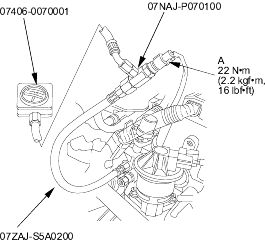
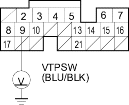

- Remove the VTEC oil pressure switch (A) and install the special tools as shown, then reinstall the VTEC oil pressure switch.

- Reconnect the VTEC solenoid valve 1P connector and VTEC oil pressure switch 2P connector.
- Connect a tachometer.
- Start the engine. Hold the engine at 3.000 rpm (min-1) with no load (in Park or neutral) until the radiator fan comes on.
- Check oil pressure at engine speeds of 1,000 and 2,000 rpm (min-1). Keep measuring time as short as possible because the engine is running with no load (less than 1 minute).
Is pressure below 49 kPa (0.5 kgf/cm2, 7 psi)?
YES |
- Go to step 24. |
NO |
- Inspect the VTEC solenoid valve (see page 11-412). |

- Turn the ignition switch OFF.
- Disconnect the VTEC solenoid valve 1P connector.
- Attach the battery positive terminal to the VTEC solenoid valve terminal.
- Start the engine, and check oil pressure at an engine speed of 3,000 rpm (min-1).
Is pressure above 390 kPa (4.0 kgf/cm2, 57 psi)?
YES |
- Go to step 28. |
NO |
- Inspect the VTEC solenoid valve (see page 11-412). |
- With the battery positive terminal still connected to the VTEC solenoid valve, measure voltage between ECM/PCM connector terminal B9 and body ground.

Is there battery voltage above 4,000 rpm (min-1)?
YES |
- Go to step 29. |
NO |
- Replace the VTEC oil pressure switch. |
- Turn the ignition switch OFF.
- Disconnect the battery positive terminal from the VTEC solenoid valve terminal.